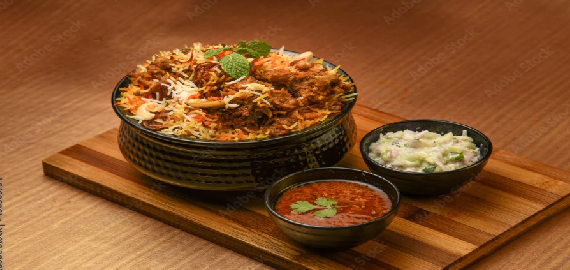

Biryani is flavoured and aromatic rice dash, popular in Pakistan and India.This recipe will guide you to make the best biryani for your family and friends.
Ingredients:
2 cups of basmati rice
1 kilo chicken, cut into pieces
1 large onion,sliced
4 tomatos, chopped
1/2 cup plain yogurt
1 tsp ginger-garlic paste
1 tsp tumeric powder
1 tsp red chilli powder
1 tsp garam masala
4 cups water
Salt to taste
Fresh coriander and mint leaves for garnish

Insructions:
Wash and soak the basmati rice for about 30 minutes
Heat oil in a large pot and saute the sliced onions until golden brown
Add the ginger-garlic paste and saute for 1 minute
Mix the chicken pieces and cooked until they are lightly browned
Add the chopped tomatos, yogurt, and spices.Cook until the mixture thicken
Boil 4 cups of water in aseparate pot.Add the soaked rice and cook until 70% done
Layer the rice and chicken mixture in the pot.Garnish with coriander and mint leaves
Cover and cook on low heat for 20 minutes to let the flavors meld togather